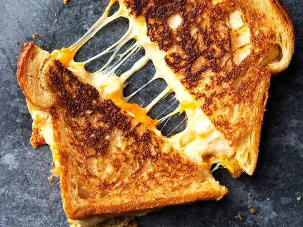

Grilled Cheese

Description
Everyone needs to know how to make a classic grilled
cheese sandwich. Whether you're a beginner cook or an
old pro, you'll come back to this top-rated grilled
cheese recipe again and again.
Ingredients
- White bread
- Sliced cheese
- Butter
Steps
- Butter the bread on one side and place the bread butter-side down on a hot skillet.
- Top with cheese, then place another slice of bread on top (butter-side up).
- Cook until the bottom slice is lightly browned, then flip.
- Continue cooking until the cheese is melted.